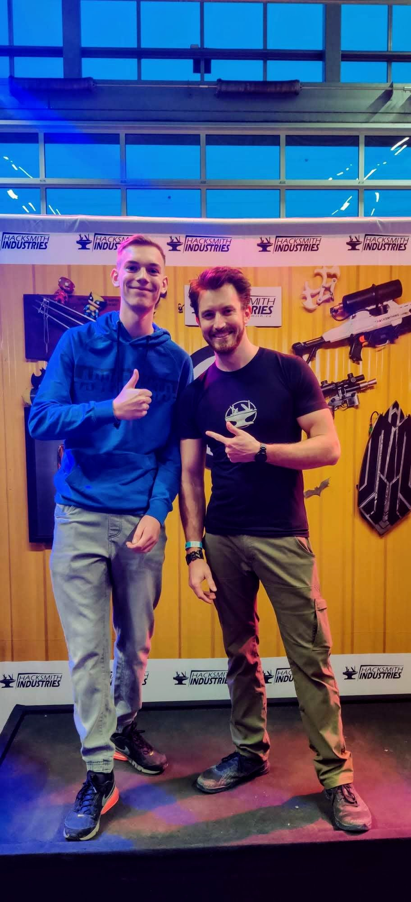

Over mij
Ik ben Leslie den Adel. Ik ben 16 jaar en kom uit Boven-Hardinxveld.
Hier rechts zie u een foto van mij (links) en The Hacksmith (rechts) op Bright Day 2019.
Hobbies
Mijn hobbies zijn gamen, keyboard spelen en mountainbiken.
Mijn favoriete games zijn: rocket league, minecraft, astroneer, beat saber en warframe. Deze zijn hieronder te zien.